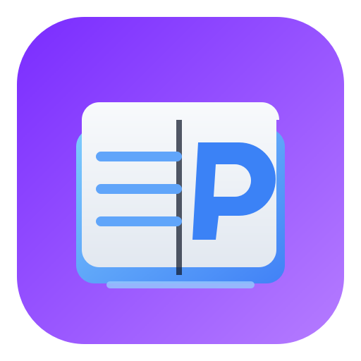

PDF reading
Open PDF files locally with straightforward navigation and viewing controls.

universalreaderlite.com
A lightweight Windows reader for PDF, EPUB, DOCX, TXT, CBR, and CBZ files.
UR Lite opens documents on your own computer. It is designed for simple reading, fast navigation, and clean viewing of common document and ebook formats.
Reader basics
Open PDF files locally with straightforward navigation and viewing controls.
Read EPUB books with light, sepia, and dark theme options.
Open DOCX files in HTML/Reflow View, with optional Original Layout support through LibreOffice.
View plain text files in a readable, focused layout.
Read CBR and CBZ comic archives, with helper software available if needed.
Use two-page and continuous reading modes for different document types.
User feedback
UR Lite is newly released. Public user reviews will appear here as feedback comes in.
Requirements
UR Lite is built for local file viewing on Windows. Documents are opened on the user's own computer.
DOCX Original Layout: requires LibreOffice installed locally. If LibreOffice is unavailable, DOCX files open in HTML/Reflow View.
CBZ files: 7-Zip may help with ZIP-based comic archive handling.
CBR files: WinRAR or compatible RAR support may be needed.
Download helper software only from the official websites linked in the README.
Preview Download
Preview build for Windows. Download the ZIP, right-click it, choose Extract All, and extract to a short folder such as C:\UR. Do not run the app from inside the ZIP.